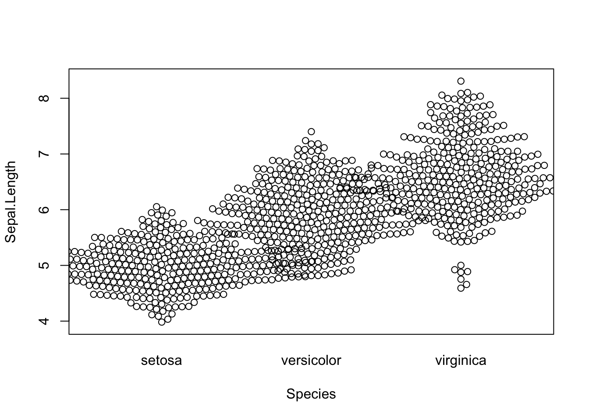
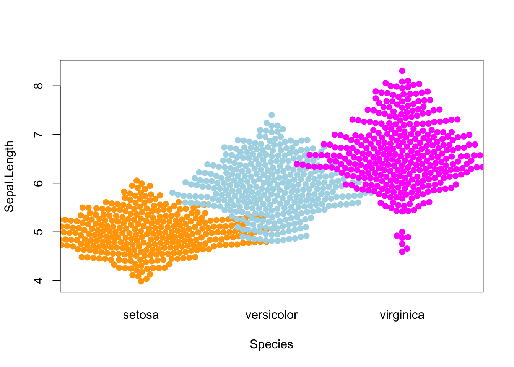
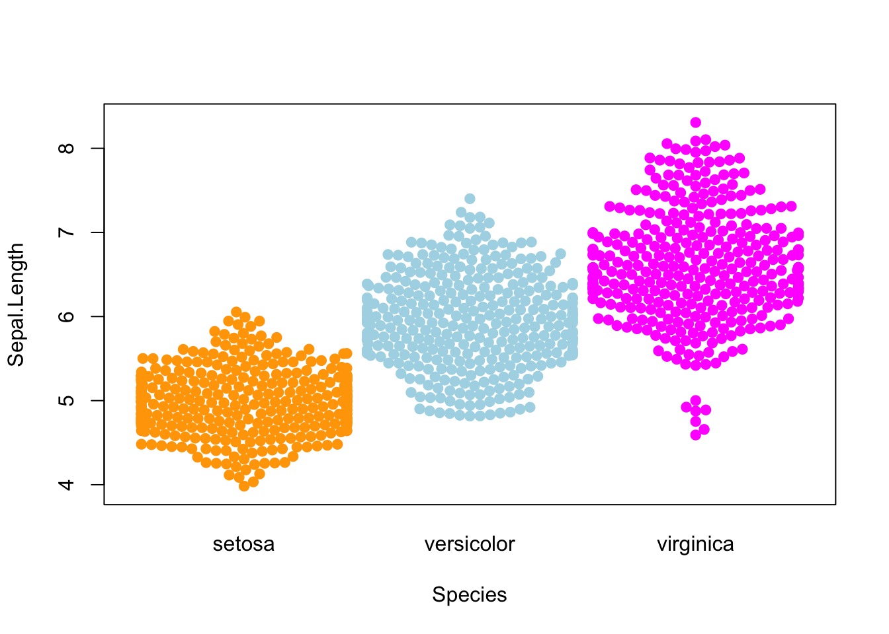

Packages
For this post, we need to install and load the beeswarm package.
We can install it from CRAN using
install.packages("beeswarm"). Then, we can load it:
Dataset
Since beeswarm plots are made to
visualize individual data points, we need a dataset
that contains numerical values. Here, we’ll use the iris
dataset, which is a built-in dataset in R.
We can easily load it:
Default grouped beeswarm plot
The package comes with a beeswarm() function, and thanks
to the ~ operator, we can easily create a
grouped beeswarm plot. Here, we’ll use the
Species column to group the data:
The following code basically means:
plot Sepal.Length for each Species
using the iris dataset.

Use different colors
Even tough the default option does what we want, having the same
color for all the Species makes the plot less readable. We
can use the col argument to change the
color of the dots:
beeswarm(
Sepal.Length ~ Species,
data=iris,
col=c("orange", "lightblue", "magenta"),
pch = 19 # fill the dots
)
Custom position behavior
When you have lots of data points, it can be useful to change the position behavior of the dots in order to avoid overlapping between groups.
Fortunately, the corral argument allows you to change
this. The available options are:
none(default): no correctiongutter: fix a higher and lower limit for each groupwrap: similar togutterbut add random noise to the position of the dotsrandom: randomly position the dotsomit: omit the dots that would overlap
Here’s an example with the gutter option:
beeswarm(
Sepal.Length ~ Species,
data=iris,
col=c("orange", "lightblue", "magenta"),
pch = 19, # fill the dots
corral = "gutter"
)
Going further
This post explains how to create a grouped beeswarm plot with R.
You might also be interested in how to create a beeswarm plot with ggplot2.
Related chart types